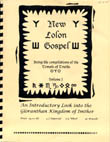

HISTORY, 1995-1996
The New Lolon Gospel is the fourth(!) RuneQuest fanzine. It centers around the Gloranthan Kingdom of Imther, and is written primarily by Harald Smith. The New Lolon Gospel was first released at RuneQuest-Con 2 and was originally planned to be yearly, but only two issues were ever printed.
THEME ISSUES
#1 An Introductory Look at Imther
#2 A Further Look into the Gloranthan Kingdom of Imther
A NOTE ON ORGANIZATION
New Lolon Gospel is a magazine abour RuneQuest and the world of Glorantha. Thus, this index is an organization of Gloranthan RuneQuest topics. However, it also reflects the fact that the World of Glorantha is now supported by many game systems. Articles with RuneQuest-specific stats are lsited as [RQ3], while the rest are generic.
COPYRIGHT
This index is © Copyright 1995-2020 Shannon Appelcline. It is released under a cc-by-4.0 (https://creativecommons.org/licenses/by/4.0/) license, allowing reuse with attribution provisions.
BACKGROUND, MISC: Gems: A Catalogue of Gloranthan Gems, by Martin Crim #2 pg 12-22 The Lore of Gloranthan Gems, by Martin Crim #2 pg 9-11
BACKGROUND, GEOGRAPHICAL, LUNAR EMPIRE, PROVINCES, IMTHER: Introduction: The Imther Campaign, by Harald Smith #2 pg 50-63 Mythology: [See CULTS] Organizations, Misc: Merchants of Imther, by Harald Smith #2 pg 6-8 Organizations, Cults: [See CULTS]
CULTS & MYTHS Misc, Full Cult Writeups: The Cult of Lokarma [RQ3], by Harald Smith #2 pg 23-25 The Cult of Ralaska [RQ3], by Harald Smith #1 pg 14-15 Lunar, Imtherian, Misc: Compendium of the Divine, by Harald Smith #1 pg 3-13 Hearth Stories & Songs, by Harald Smith, Peter Michaels & James Polk #1 pg 16-19 Mythic Cycles, by Harald Smith & James Polk #1 pg 20-39 Mythic Cycles continued, by Harald Smith #2 pg 36-49 Trickster Stories & Songs, by Smith & Polk #2 pg 26-35 Lunar, Imtherian, Lokarma The Cult of Lokarma [RQ3], by Harald Smith #2 pg 23-25 Lunar, Imtherian, Ralaska The Cult of Ralaska [RQ3], by Harald Smith #1 pg 14-15
Other Gaming Resources: [ More Magazine Indices | Ars Magica Campaigns ]